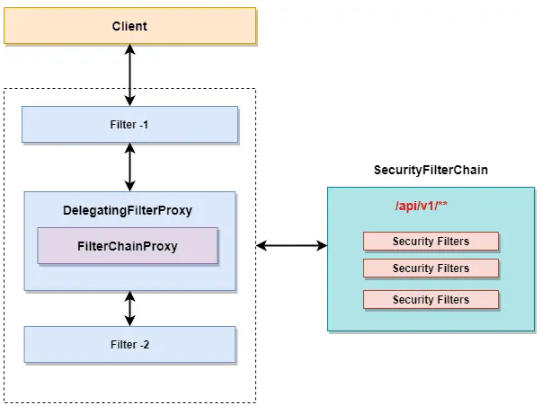
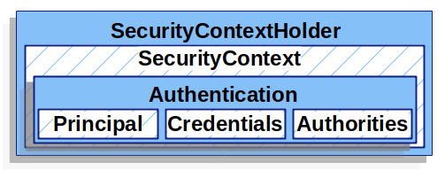

Spring Security는 인증, 인가에 대한 커스텀이 가능한 access-control framework 이다. Spring Security는 Spring 기반 어플리케이션을 보호하기 위한 표준 framework이다.
Spring Security를 사용하는 방법은 SecurityConfig 클래스를 통해 인증 및 인가에 대한 내용을 커스텀하고, 해당 클래스를 빈으로 등록하고 스프링 필터체인에 Spring Security Fliter를 등록하면 된다.
Filter?
Filter란 객체의 형태로 클라이언트로부터 오는 요청과 최종자원 사이에 위치하여 클라이언트의 요청 정보를 변경하거나, 서버의 응답을 요청 결과에 맞게 변강하는 기능을 한다. Filter는 여러개가 모여서 Filter Chain을 형성할 수 있다.

Spring Security Filters Chains
스프링 시큐리티는 서블릿 필터를 기반으로 동작한다. 클라이언트가 서버로 요청을 보내면, DispatcherServlet이 하나의 HttpServletRequest를 받아서 요청을 처리하고 HttpServletResponse 응답을 클라이언트로 보낸다. 여기에 필터가 포함되면, 클라이언트와 서버 사이에서 요청과 응답은 필터를 거치게 된다.

DelegatingFilterProxy
DelegatingFilterProxy는 Servlet 컨테이너의 라이프 사이클과 Spring Application Context 사이에서 다리 역할을 하는 필터이다. Servlet 컨테이너에서는 Spring 컨테이너에 등록된 빈을 인식할 수 없다. 그래서 Spring Security에서는 DelegatingFilterProxy라는 서블릿 필터 구현체를 제공한다. DelegatingFilterProxy는 서블릿 매커니즘을 통해 서블릿의 필터로 등록될 수 있으며 스프링에 등록된 빈을 가져와 의존성을 주입할 수 있다.
FilterChainProxy
DelegatingFilterProxy의 내부에는 FilterChainProxy라는 것이 있으며, 이것은 Spring Security에서 제공하는 필터이다. FilterChainProxy는 DelegatingFilterProxy를 통해 받은 요청과 응답을 Spring Security Filters Chains에 전달하고 작업을 위임하는 역할을 한다. FilterChainProxy는 DelegatingFilterProxy 필터에 의해 시작된다.
SecurityFilterChain

SecurityFilterChain은 인증을 처리하는 여러 개의 시큐리티 필터를 담는 필터 체인이다. FilterChainProxy를 통해 서블릿 필터와 연결되고 어떤 시큐리티 필터를 통해 인증을 수행할지 결정한다. 여러 개의 SecurityFilterChain을 구성하여 URL에 따라 다른 SecurityFilterChain이 사용되도록 할 수 있다.
Spring Security Architecture

Spring Security는 “/login” 요청이 오면 로그인을 진행시킨다. 로그인 진행이 완료되면 Security는 Session을 만들어 준다. 그 Session이 SecurityContextHolder이다. Session 안에는 SecurityContext가 저장되어 있고 저장되는 내용은 Authentication 타입의 객체로 존재한다. Authentication 객체는 principal, credentials, authorities로 구성된다.
SecurityContextHolder
Spring Security authentication model의 핵심은 SecurityContextHoler 이다.

SecurityContextHolder는 인증된 유저의 세부 정보를 저장하는 곳이다.
Authentication
Authentication은 Spring Security에서 두개의 주요 목적을 가진다.
- 유저의 자격증명을 위한 AuthenticationManager 입력값
- 현재 인증된 사용자의 정보
Authentication의 구성 객체는 아래와 같다.
- principal : 유저를 식별한다. username/password를 인증할 때 UserDetails의 인스턴스이다.
- credentials : 비밀번호이다. 많은 케이스에서 유저의 인증 이후 이것은 지워진다.
- authorities : 유저의 권한이다.
UserDetails 인터페이스는 핵심 유저 정보를 제공한다.
GrantedAuthority
GrantedAuthority는 Authentication.getAuthorities() 함수를 통해 획득할 수 있다. 이 함수는 GrantedAuthority 객체의 Collection을 제공한다. GrantedAuthority는 유저의 권한이다. 유저의 username/password에 기반한 인증을 사용할 경우 GrantedAuthority는 일반적으로 UserDetailsService에 의해 로드된다.
UserDetailsService는 loadUserByUsername() 메소드를 가지고 있으며, DB에서 유저 정보를 가져오는 역할을 한다.